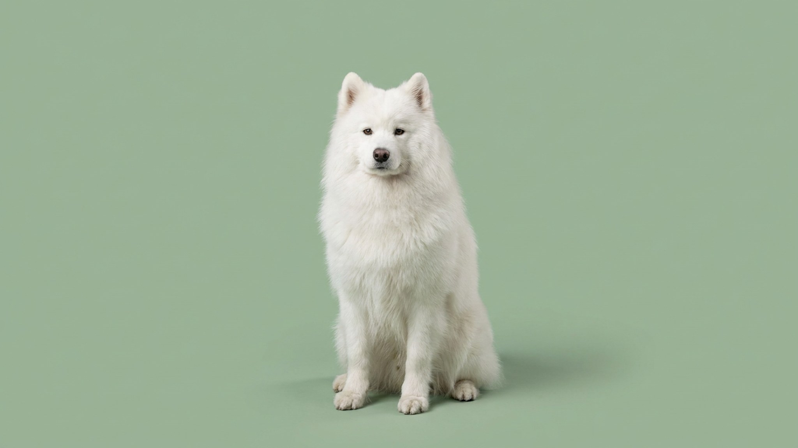

Самоед и линька: почему нельзя брить и как помочь шерсти летом

24 июня 2026 · 3 минуты чтения · Породы собак · Уход · Собаки
Раз в год шерсть самоеда вылезает пригоршнями, а июльская жара соблазняет хозяина отнести собаку в груминг-салон и «облегчить ей жизнь». Именно этого делать не стоит: стрижка самоеда нарушает ту самую систему, которая держит его в прохладе лучше любого вентилятора. В статье разбираем, как устроена двойная шуба, когда и как правильно вычёсывать и что реально помогает породе пережить лето.
🐾 Первая помощь — всегда под рукой
AnimaLife подскажет, что делать в тревожной ситуации с питомцем ещё до визита к врачу. Откройте в один тап.
Открыть AnimaLife → Открыть в MAX →
Двойная шуба: зачем она самоеду и что происходит при стрижке
Самоед — арктическая порода. Его шерсть двухслойная: жёсткий остевой волос снаружи отражает солнечные лучи и отводит влагу, а мягкий густой подшёрсток внутри удерживает воздушную прослойку, которая работает как термос — не пускает жару к телу. Под нетронутым подшёрстком самоеда в +30°C прохладнее, чем на открытой коже остриженной собаки.
Стрижка разрушает этот баланс: остевой волос и подшёрсток растут с разной скоростью, после машинки структура шубы восстанавливается месяцами и нередко уже не приходит в прежнее состояние. Кожа самоеда без защитного слоя перегревается и обгорает быстрее. Правило одно: самоеда не бреют.
Линька: «сброс шубы» раз в год, иногда два
Самоеды линяют интенсивно один-два раза в год — весной и осенью. Линька длится три-пять недель: подшёрсток выходит крупными пластами, шерсть буквально катится по полу. Это норма породы, а не сигнал о проблеме. Несколько ориентиров:
- Весенняя линька обычно интенсивнее: сбрасывается зимний подшёрсток. Может идти дольше и объёмнее.
- Осенняя линька умереннее — порода готовится к зиме, но и зимний подшёрсток ещё не вырос в полную силу.
- Вне сезона самоед линяет мало. Если шерсть лезет клоками круглый год — повод обсудить питание и образ жизни с ветеринаром.
- У сук дополнительная линька бывает после течки или после щенков — это физиологично.
Как и чем вычёсывать самоеда
Регулярное вычёсывание — главный инструмент ухода за шерстью самоеда и в обычное время, и тем более в линьку. Плотный свалявшийся подшёрсток перестаёт вентилироваться и держит жар у кожи. Что работает:
- Пуходёрка или расчёска-грабли с длинными зубьями — добирается до нижнего слоя шерсти самоеда и вытягивает отмерший подшёрсток.
- Фурминатор или расчёска с триммерными зубьями — хороши в пик линьки, но не заменяют полноценную обработку.
- Частота: вне линьки достаточно раз в неделю. В активную линьку — каждый день или через день.
- Порядок: сначала пуходёрка по всему телу, потом металлическая расчёска. Не тяните колтуны — размачивайте спреем или распутывайте руками.
- Купание в линьку ускоряет процесс: мокрый подшёрсток самоеда выходит активнее. После купания — обязательная сушка феном и расчёсывание.
Самоед летом: как помочь породе в жару
Самоед переносит жару хуже, чем холод, — это факт. Но инструменты адаптации не в груминг-кресле, а в режиме дня:
- Прогулки утром и вечером. До 9:00 и после 20:00 — асфальт остывает, воздух прохладнее. В середине дня лучше дать самоеду отлежаться дома.
- Тень и вода. На улице — тень деревьев, не навес (под навесом горячий воздух не циркулирует). Дома — миска со свежей водой постоянно, можно добавить кубики льда.
- Охлаждающий коврик или мокрое полотенце. Самоед охотно ложится на влажную поверхность. Лапы и паховая область — зоны теплообмена, охлаждать можно именно их.
- Регулярный уход за шерстью особенно важен летом: вычесанный самоед с «открытым» подшёрстком вентилируется лучше, чем собака с запущенной свалявшейся шубой.
- Сигналы перегрева — учащённое тяжёлое дыхание, вялость, отказ от воды — повод уйти в прохладу немедленно и при сохранении этих признаков обратиться к ветеринару.
🐾 Экономьте на лишних визитах к врачу
Сначала спросите AI-ветеринара в AnimaLife — часто этого достаточно, чтобы понять, нужен ли визит к врачу.
Спросить бесплатно → Спросить в MAX →
🐾 Понравился разбор?
Подпишитесь на канал — каждый день разбираем по одному тревожному симптому у кошек и собак: что в пределах нормы, а когда пора к врачу. Подпишитесь, чтобы не пропустить разбор, который может спасти здоровье вашего питомца.
Материал носит информационный характер и не заменяет очную консультацию ветеринара.
← Все статьи · Открыть AnimaLife в Telegram · RSS